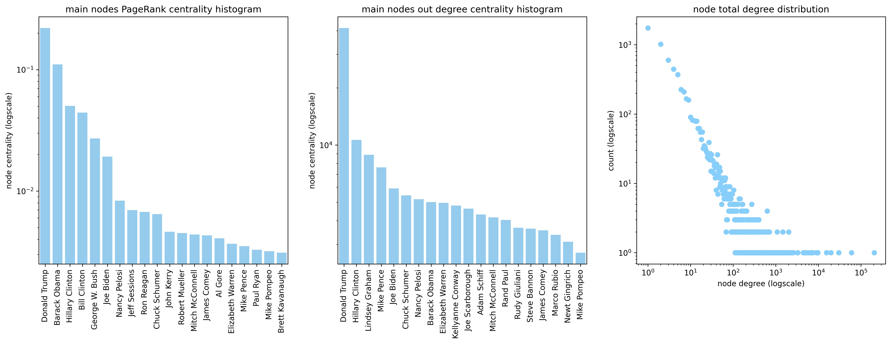
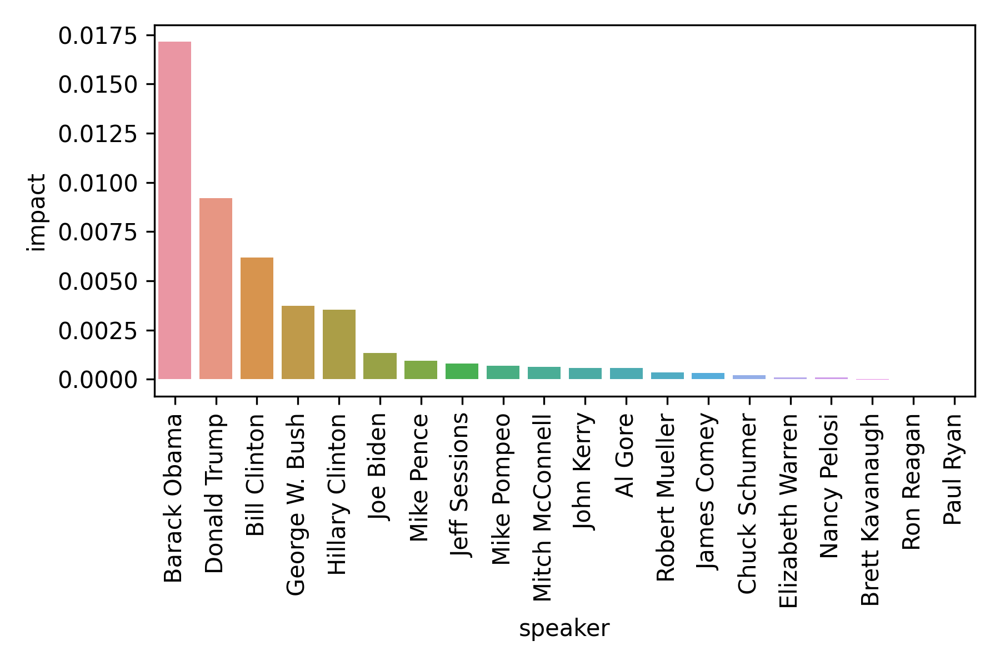
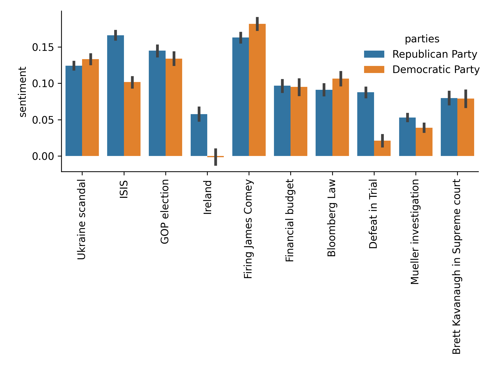
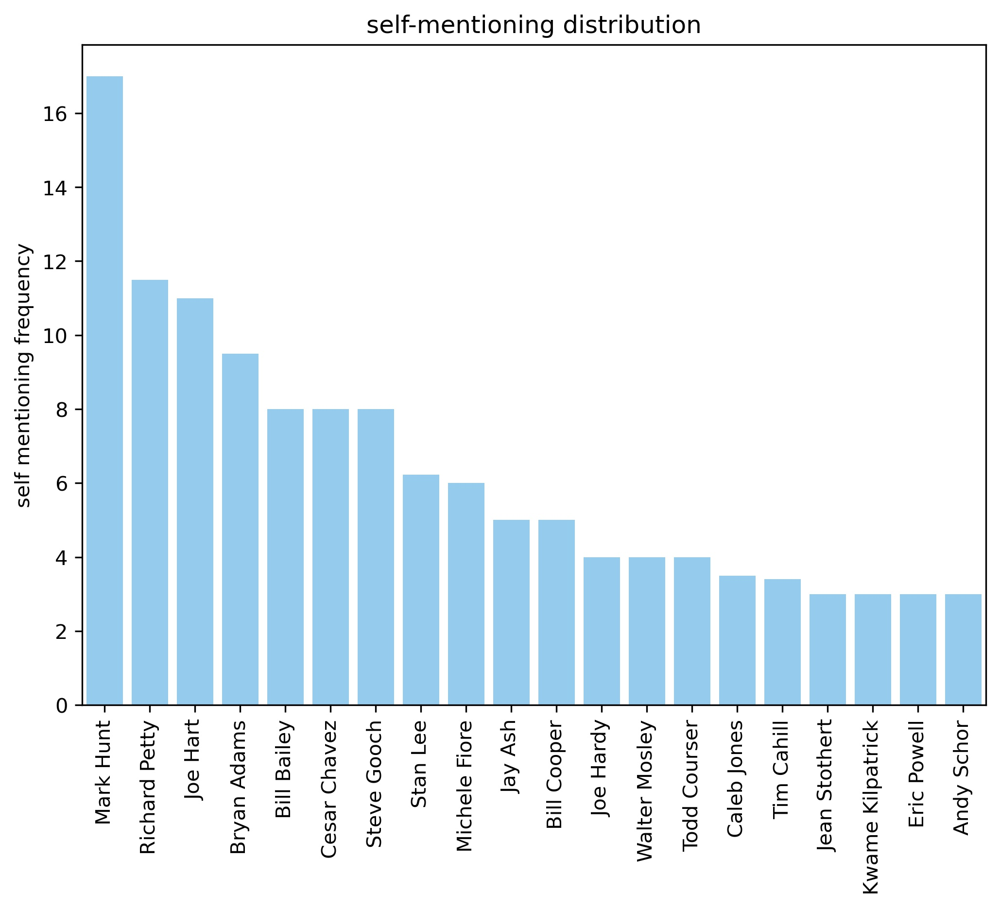
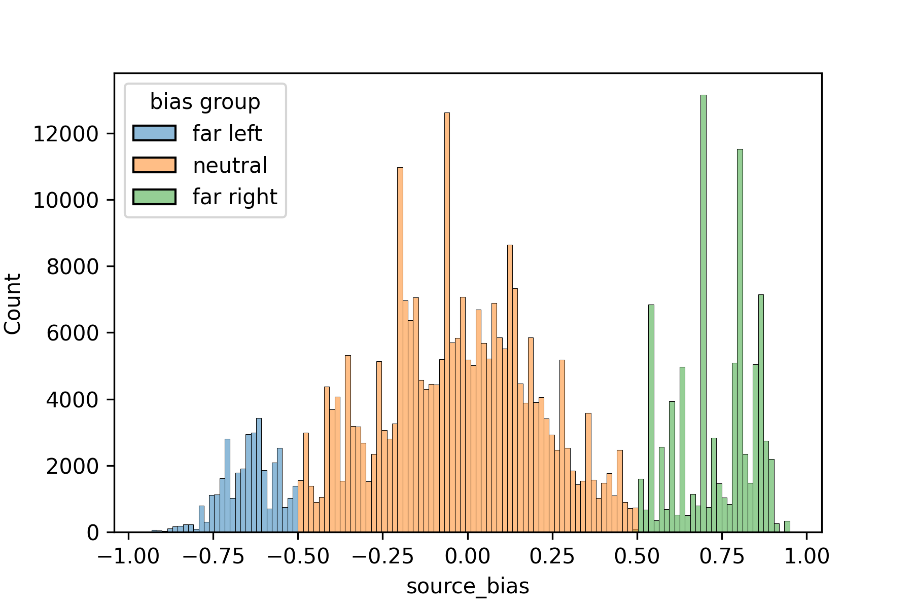
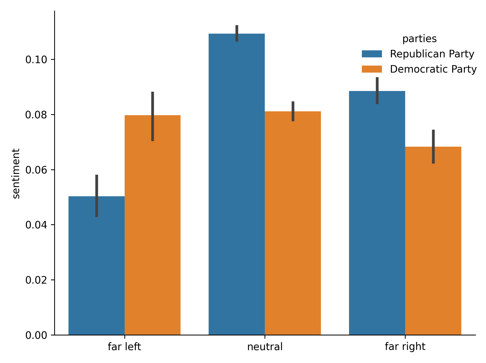

Introduction
It is known that the US has a bi-polar political landscape, with Democrats on one side and Republicans on the other. Our project aims to verify and back up this assumption with quotebank data by visualizing the political landscape in a network model.
With the rich political data in the dataset (we found that 13% of the quotations are uttered by politicians. And 48% of the political quotations are from the US),we decide to analyze the network between politicians through their quotation and tell a datastory about the ecosystem of the political world focusing on the United States.
This data story is based on this network using the bi-directional frequency, sentiment and topics when US politicians mention other politicians (self-mentions, US or world-wide).
The network connections will be analyzed in-depth to reveal the structure of central nodes and communities/hubs. It will also be extended with Natural Language Processing technique as sentiment analysis and machine learning technique Latent Dirichlet Allocation topic clustering (unsupervised) to reveal more information (emotion and recurrent topics) in the mentions.
US politician ecosystem
To capture interactions between politicians, we built a directed network graph where each node is a politician and each edge represent mentions of one politician by another one. The weight of each edge represent the number of occurencies of it. We applied the Kernighan-Lin algorithm to split the graph into 2 communities. Each node has two attributes: the party the politician belongs to (Democratic, Republican or directly affiliated parties) and the community it has been assigned to. The goal of this part of our work was to check wether US politicians interact more within their own party or not.
American politician network only based in mentioning
{% include simple_network_structure.html%}A naïve version of American politician network is displayed as above, in which the 20 most central nodes of each community and main edges between nodes are shown. The size of the nodes represents PageRank centrality and the width of the edge represent the log scaled mentioning frequency. Explore the plot by hovering onto different nodes. Maybe you can already guess who the biggest node in the graph is. Yes! It’s Donald Trump!
Who is the most popular and/or gossipy ?
There is no surprise that Trump is the most noisy politician in public media from year 2015 to 2020. But can you guess who is the most popular guy mentioned by other politicians? And who is the most gossipy guy that mentions other politicians a lot?
With the centrality analysis we see Trump as well, if you ONLY CONSIDER the total counts of mentions. But by combining the in and out degree, something interesting could be found. Obama did not gossip about other politicians (8th rank in out-degree) a lot although being mentioned very often(2nd rank in in-degree). George W. Bush is mentioned a lot (4th rank in out-degree) but does not even appears on the 20 most talkative politicians (out of 20th rank in-degree). We also showed the total degree distribution in the third graph, as expected which is nearly a power law distribution for big social network graph in the real life.
Who is the "nicest guy" ?
Politicians speak with emotions in public media, especially when they mention another politician. There is an impression that most of the time politicians are criticizing each other and bringing negative emotions to the media. But do you know the politicians that are “nicest guys” who speak with most positive emotions when mentioning and bring positive energy to the public?
Try exploring the graph below to see the ranking of positive impact of politicians in the network!
Here the politician's general expression on others or "impact", is simply defined as the product of his or her mean sentiment score and the pagerank importance. A larger impact value suggests a stronger positive apperance in the media.
Does the democratic and Republican makes really "parties" ?
The American politician landscape is bi-polared and could be splitted into 2 parties with affiliations. Do the politicians from same party really make a “party” when inferred from their political mentions? We did a network community detection with with Kernighan-Lin algorithm, which minimizes the edge weights(mentions) between inter-community and maximize the edge weights(mentions) intra-community. We make an interactive plot of the network with community, in which fill color represents the party belonging, boundary color represents bisection community belongings and edge width represents mentioning frequency.
{% include bipartite_network.html%}We computed the correlation between the party and network community belongings of the politicians, and the results are statistically significant (Spearman's correlation coefficient = 0.03 with a p-value of 0.012) in a 95% two-sided confidence interval. We can therefore say that there is a statistically significant correlation between real Republican/Democratic politicians and the community bisection of our network, meaning US Republican/Democratic politicians have the tendency to more often mention their peers rather than opposite party politicians in the medias.
What are the “hot” topics inside parties?
Do you know if Republican usually speaks with a Republican style and Democrats with a Democratic style when mentioning others? What could be the hot topics inside both parties and what are their sentiments when mentioning about them?
We visualize the topic 10 topics with sentiment inside each party as shown below., in which the mean sentiment value over a topic by all politicians in the party was considered as the general tone of the party on such topic.

We can see that two parties’ tones are quite different over topics like "Ireland", "Defeat in Trial" and "ISIS", but appear to be similar over others.
How much can you be "narcissist" ?
Besides mentioning others, politicians also speak a lot about themselves in the media, which are mostly with positive sentiments. You may already know the guy talking the most about himself is Trump as shown in the self-mentioning occurrence below. But is Trump really the most “narcissist”?
{% include self_men_occurencies.html%}We regularize the self-mentioning metrics of a node by dividing the total self-mentions by all out-going mentions, which represents how many of the mentions the politician make are self-mentions. This frequency considered to better describe a “narcissist” politician who mostly speaks of him/her-self. Can you guess which politician mentions themselves much more than others? Is it still Trump? Explore the interactive plot below!
{% include self_men_network.html%}Surprise! The politicians who mentions most about themselves in public media (Trump) aren't necessarily those who say most about themselves of all mentions (Mark Hunt)! We made a bar-plot showing the top 20 “narcissist” politicians that mention themselves far more than others. In every 17 mentions Mark Hunt made, 16 of them were about himself! Interesting?
Color represents party belongings and size of nodes represent the number of frequency. Here are revealed the most narcissist american politicians.You can see the rankings below.
Sentiment X Topics: What topics do politicians speak when criticizing/praising each other?
American political ecosystem is a battlefield with words as bullets. Politicians criticize each other by picking the most disadvantageous topic for the opponent. In the interactive plot below we visualize the politicians' sentiment when mentioning each other in the context of different topics. The topic comes from the interpretation of mentioning contents from LDA Analysis. The width of the edge represents the bi-directional mentioning frequency while the arrows represent the sentiment and uni-directional mentioning frequency about the specific topic.
** The dropdown list has to be updated to a new value to get the plot going.**
{% include topic_sentiment.html%}By playing with the plot, we can see that politicians hold different sentiments against others when talking about different topics. In particular, the politicians tend to have much more positive sentiment against others when mentioning Scandals, which could be interpreted as another kind of 'Negative mentions' and makes sense when making “mentions attacks”.
How biases may influence the results ?
All our data used to build the plot comes from quotebank, which is A Corpus of Quotations from a Decade of News . From intuition the news are biased in nature as different media may selectively report different things to their interests. But is this really the case?
We evaluate the bias(left-wing or right-wing) of quotes by looking up their sources in the Partisan Bias Scores Dataset. As shown below we plot the distribution of all political mentions from year 2015 to 2020.
Can you imagine if mentions reported by different media would have different preferences for sentiments for different parties? Explore the plot below to have a look!
Yes that is the case! It is found that the tone of two parties varies by different media. In general, the Democratic party speaks more positively in far left news (p value < 0.05). Similarly, the Republicans speaks more positively in far right news (p value ≪ 0.05) but with a more significant statistical difference. Note that for all media, the general tone of two parties are significantly different.
US-World iteractions
Make World Great Again
By the way, how do you think the US politician talk about foreign politician ?
We decided to visualize it with a global map of the quotes from US politicans to the different countries of the world. With the plot below, you can select from which party do you want to visualize the mentions and the timeframe (2015-2020). You can zoom and which country you are interested in, the width of the lines represent the frequency according to the year and the colour of the country is the mean sentiment from all/party politician. Have fun and look how it envolves and differs by years/parties!
{% include World_Graph.html%}What is most remarkable here ? First, in general the most mentioned country prize is for ... Russia (not very surprising... right?). Except for one year and one party ... Can you find it ? Hint: When were there a presidential crisis ? Hint 2 ( but you have certainly already find it ! ) : It was in South America.
Secondly, it seems that republicans and democrats do not have really the same thinkings. Carefull, the "All" parties visualization give an average of the sentiment, it doesn't represent what all the parties could think, a neutral sentiment could be caused by the cancellation from different parties (reason why democratic and republicans can be also visualized separately). Do you like politics ? Are you good on history ? Feel free to explore it and deduce which could be the reasons of the worst/best sentiment.
Conclusion
The polarization of the United States politics is already backed by multiple studies, but many of them are done indirectly via survey on ideology or public behavior change (NW et al., 2014; Wilson et al., 2020). Our website and network visualisation reveal American political ecosystem directly with quantitative metrics and statistical conclusions. We showed that there are indeed two communities representing Republicans and Democrates in the US political landscape, as one is more likely to mention politicians from its own party than from the opposite party.
We also observed interesting facts about self-mentioning, that the politicians who mentions most about themselves in public media (Trump) aren't necessarily those who say most about themselves of all mentions(Mark Hunt).
The politicians hold different sentiments against others when talking about different topics. In particular, the politicians tend to have much more positive sentiment against others when mentioning Scandals, which could be interpreted as another kind of 'Negative mentions' and makes sense. On a global level, some major events also occur during the time span of quotebank (2015 - 2020) like Brexit, the US-China trade war, COVID pandemic, etc., some of their consequences can be seen on US politician feelings about the heads of other countries.